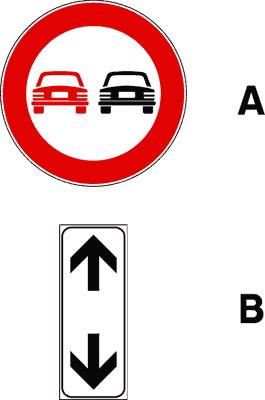
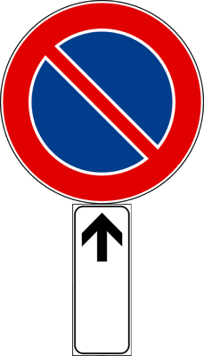
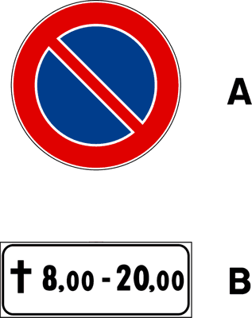
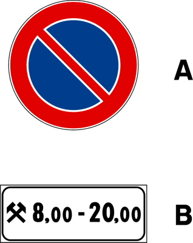
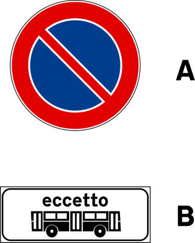
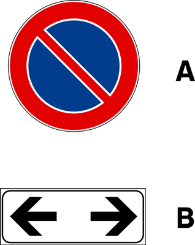
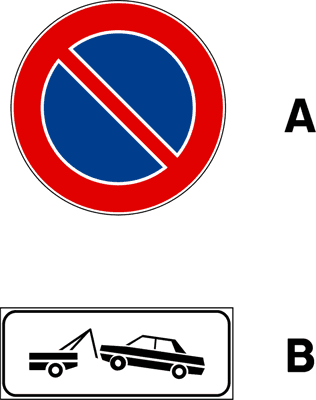
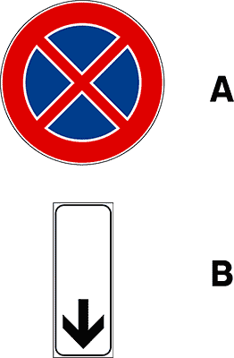

الخصائص العامة لإشارات المنع
Caratteristiche generali dei segnali di divieto
الشكل — اللون — القاعدة الذهبية
Forma, Colore, Regola d'oro
🔴 الشكل واللون المميز
Forma e colore
- دائرية الشكل بحافة حمراء عريضة وخلفية بيضاء
- استثناء: إشارة STOP ثمانية الشكل (أوكتاغون) حمراء كلها
- استثناء: Senso vietato دائرة بيضاء بحافة حمراء وشريط أبيض أفقي
- الرمز داخل الدائرة يُحدد نوع المنع بدقة
⚠️ القاعدة الذهبية
Regola d'oro
- مكان التركيب: قبل بداية المنطقة المقيدة مباشرة
- نطاق السريان: من الإشارة حتى نهاية القيد أو إشارة إلغاء
- الإشارات اللاحقة تُعدّل أو تلغي القيد السابق
- إشارة المنع في تقاطع تسري على التقاطع القادم فقط
💡 ملاحظة الامتحان: كل إشارة منع تُلزم السائق بالامتثال فور رؤيتها — لا يُسمح بتجاهلها حتى لو كان الطريق فارغاً. المخالفة تعني عقوبة مالية وخصم نقاط.
المقارنة الفاصلة: حظر العبور مقابل ممنوع الدخول
Divieto di transito vs. Senso vietato
✖
حظر العبور الكامل
Divieto di transito
- يمنع جميع المركبات من العبور في الاتجاهين
- المشاة مسموح لهم بالعبور دائماً
- الدراجات الهوائية — تُدفع بالإيد (سيراً على الأقدام) فقط
- يُستخدم في الشوارع المغلقة، أعمال الطريق، تحت الجسور المنخفضة
ممنوع الدخول (باب الاتجاه الواحد)
Senso vietato
- يمنع الدخول من هذا الطرف فقط (شارع ذو اتجاه واحد)
- الطريق مفتوح للمركبات القادمة من الاتجاه الآخر
- المشاة مسموح لهم دائماً
- الفارق الجوهري: يمنع الدخول من اتجاه واحد، لا العبور كله
⚠️ فخ الامتحان الشائع
السؤال: "إشارة Divieto di transito تمنع المشاة من العبور" → خطأ (Falso).
المشاة دائماً مسموح لهم بالعبور في كلتا الإشارتين. لكن الدراجات الهوائية يجب أن تُدفع يدوياً ولا تُقاد.
حظر التجاوز — المحاكي التفصيلي
Divieto di sorpasso — Simulatore
🚫 حظر التجاوز العام
Divieto di sorpasso
- يحظر تجاوز جميع المركبات متعددة المسارات
- الدراجات الهوائية وثنائية العجلات (دون محرك) — مسموح تجاوزها
- الدراجات النارية (2 عجلات بمحرك) — تجاوزها جائز بشرط
- الشرط: عدم تخطي الخط الأبيض الصلب (striscia continua)
✅ مسموح: تجاوز مركبة ذات عجلتين فقط (bicicletta, ciclomotore, motocicletta) — إذا لم يتطلب عبور الخط الصلب
🚫🚛 حظر تجاوز الشاحنات
Divieto di sorpasso per i veicoli merci oltre 3,5 t
- يحظر على الشاحنات (> 3.5 طن حمولة) تجاوز المركبات الأخرى
- الحافلات (Autobus) — غير مشمولة حتى لو تزيد عن 3.5 طن
- الفارق الحاسم: veicoli merci = بضائع/حمولة فقط
- الحافلة تنقل ركاباً (passeggeri) وليس بضائع
⚠️ فخ: "هذه الإشارة تمنع الحافلات > 3.5 طن من التجاوز" → خطأ! تنطبق على الشاحنات (veicoli merci) فقط.
📋 قاعدة الإلغاء: حظر التجاوز يسري حتى ظهور إشارة إنهاء الحظر (Fine divieto di sorpasso — دائرة رمادية بخطوط مائلة) أو نهاية المنطقة المحظورة.
المقارنة الفاصلة: حظر الوقوف مقابل حظر التوقف
Divieto di sosta vs. Divieto di fermata
🅿️ حظر الوقوف
Divieto di sosta
- خط مائل واحد داخل الدائرة
- الوقوف (Sosta) محظور — لكن التوقف القصير جائز
- في المدن: سريان 08:00 - 20:00 فقط (ما لم يُذكر غير ذلك)
- Fermata مسموحة: يمكن التوقف لإنزال راكب أو تحميل حمولة فوراً
- بعد انتهاء ساعات الحظر — الوقوف الكامل مسموح
🚫 حظر التوقف المطلق
Divieto di fermata
- خطان متقاطعان (X) داخل الدائرة
- يحظر أي توقف — حتى لثانية واحدة
- سريان: 24 ساعة، 7 أيام — لا استثناءات
- لا استثناءات — لا إنزال راكب، لا تحميل، لا طوارئ
- استثناء وحيد: سيارات الإسعاف وسيارات الشرطة في حالة طوارئ
⚠️ الفخ الأكثر تكراراً في الامتحان
السؤال: "Divieto di sosta يمنع حتى إنزال الركاب" → خطأ! — إنزال الراكب هو Fermata (توقف عابر) وليس Sosta (وقوف)، وهو مسموح مع هذه الإشارة.
السؤال: "Divieto di fermata يسمح بالتوقف لحظات لإنزال الركاب" → خطأ! — الحظر مطلق ولا توجد أي استثناءات للمركبات العادية.
حدود السرعة القصوى — الفروقات الدقيقة
Limiti massimi di velocità — Dettagli critici
قراءة إشارات السرعة بدقة
Lettura precisa dei segnali di velocità
1
الرقم داخل الدائرة = الحد الأقصى المسموح به. السرعة بالكيلومتر في الساعة (km/h) فقط.
2
يسري من موضع الإشارة حتى ظهور إشارة سرعة مختلفة أو "Fine limite di velocità" أو نهاية الطريق.
3
في حال وجود لوحة تكميلية (pannello integrativo) تحت الإشارة — قد تُقيد النطاق (مثلاً: "فقط عند المطر") أو نوع المركبة.
4
الحد الأقصى المتغير إلكترونياً (Limite variabile) له قوة قانونية مساوية للإشارة الثابتة.
| الإشارة | ما تُقيّده | نطاق السريان | إلغاؤه |
|---|---|---|---|
| دائرة حمراء + رقم (مثلاً 50) | الحد الأقصى بالكيلومتر | من الإشارة للأمام | إشارة سرعة أخرى أو "Fine limite" |
| دائرة بيضاء رمادية + رقم مشطوب | إلغاء القيد السابق | فوري | — |
| Zone 30 (المنطقة 30) | جميع الطرق داخل المنطقة | حتى إشارة "Fine Zona 30" | إشارة نهاية المنطقة |
جدول الاستثناءات الشامل لإشارات المنع
Tabella delle eccezioni — Tutti i segnali
| الإشارة (Segnale) | المنع الأساسي | المشاة | الدراجات الهوائية | استثناء مهم |
|---|---|---|---|---|
| Divieto di transito | جميع المركبات في الاتجاهين | ✓ مسموح | مدفوعة يدوياً فقط | الطوارئ بإذن |
| Senso vietato | المركبات من هذا الاتجاه | ✓ مسموح | ✗ ممنوعة | الطريق مفتوح من الاتجاه الآخر |
| Divieto di sorpasso | تجاوز المركبات متعددة المسارات | — | ✓ تجاوزها جائز | تجاوز 2 عجلة جائز بلا عبور خط صلب |
| Divieto di sosta | الوقوف (Sosta) | — | — | Fermata (توقف عابر) مسموح |
| Divieto di fermata | أي توقف — مطلق | — | — | الطوارئ فقط (إسعاف/شرطة) |
| Limite di velocità | السرعة فوق الرقم المذكور | — | — | يُلغى بإشارة أخرى أو Fine limite |
قاموس مصطلحات الباب الثالث
Glossario Capitolo 03
Segnali di divieto
إشارات المنع
الفئة الكاملة — دائرة حمراء تُقيّد السلوك
Divieto di transito
حظر العبور الكامل
يمنع جميع المركبات في الاتجاهين — المشاة مسموح
Senso vietato
ممنوع الدخول (اتجاه واحد)
يمنع الدخول من هذا الطرف فقط — الطريق مفتوح من الجهة الأخرى
Divieto di sorpasso
حظر التجاوز
يمنع تجاوز المركبات — ماعدا ثنائية العجلات بشروط
Divieto di sosta
حظر الوقوف
خط مائل — يمنع Sosta لكن يُجيز Fermata
Divieto di fermata
حظر التوقف المطلق
خطان متقاطعان — يمنع أي توقف 24/7 بلا استثناء
Sosta
الوقوف (الراكد)
ترك المركبة دون سائق لفترة — الركن
Fermata
التوقف العابر
توقف مؤقت مع السائق لإنزال راكب أو تحميل — لا يُعدّ Sosta
Striscia continua
الخط الأبيض الصلب
لا يجوز عبوره أو تجاوزه في أي حال
Veicoli merci
مركبات البضائع (الشاحنات)
تشمل الشاحنات وناقلات البضائع — لا تشمل الحافلات
Autobus
الحافلة
مركبة ركاب — لا تنطبق عليها قيود الشاحنات (veicoli merci)
Fine divieto di sorpasso
إنهاء حظر التجاوز
دائرة رمادية بخطوط مائلة — تُلغي حظر التجاوز السابق
معرض إشارات الباب الثالث
Galleria immagini — Capitolo 03

54 · Divieto transito

55 · Senso vietato

56 · Divieto sorpasso

57 · Divieto sorpasso merci

58 · Limite velocità

59 · Fine limite

60 · Divieto sosta

61 · Divieto fermata

62 · Segnale 62

63 · Segnale 63

64 · Segnale 64

65 · Segnale 65

66 · Segnale 66

67 · Segnale 67

68 · Segnale 68

69 · Segnale 69

70 · Segnale 70

71 · Segnale 71

72 · Segnale 72

148 · Segnale 148

151 · Segnale 151

932 · Segnale 932

940 · Segnale 940

946 · Segnale 946

947 · Segnale 947

948 · Segnale 948

949 · Segnale 949

950 · Segnale 950

955 · Segnale 955
أسئلة تدريبية تفاعلية — الباب الثالث
Quiz interattivi — Segnali di divieto
Il segnale "Divieto di transito" vieta anche il passaggio dei pedoni.
إشارة "حظر العبور" تمنع المشاة أيضاً من العبور.
❌ خطأ (Falso) — إشارة حظر العبور تمنع المركبات فقط. المشاة مسموح لهم دائماً بالعبور.
Il segnale "Divieto di sosta" impedisce anche la fermata per fare scendere un passeggero.
إشارة "حظر الوقوف" تمنع أيضاً التوقف لإنزال راكب.
❌ خطأ (Falso) — Divieto di sosta يمنع الوقوف (Sosta) فقط. التوقف العابر (Fermata) لإنزال راكب مسموح.
Il segnale "Divieto di sorpasso" vale anche per il sorpasso delle biciclette.
إشارة "حظر التجاوز" تنطبق أيضاً على تجاوز الدراجات الهوائية.
❌ خطأ (Falso) — تجاوز الدراجات الهوائية (biciclette) وثنائية العجلات جائز بشرط عدم عبور الخط الصلب (striscia continua).
Il segnale "Divieto di sorpasso per veicoli merci oltre 3,5 t" si applica anche agli autobus di peso superiore a 3,5 t.
إشارة حظر تجاوز الشاحنات (> 3.5 طن) تنطبق على الحافلات أيضاً إذا تجاوزت 3.5 طن.
❌ خطأ (Falso) — الإشارة تنطبق على "veicoli merci" (مركبات البضائع) فقط. الحافلات (autobus) تنقل ركاباً وليست مركبات بضائع.
Con il segnale "Divieto di fermata" è consentito fermarsi brevemente per far scendere un passeggero.
مع إشارة "حظر التوقف" يُسمح بالتوقف لفترة وجيزة لإنزال راكب.
❌ خطأ (Falso) — Divieto di fermata يمنع أي توقف مطلقاً، 24 ساعة دون أي استثناء للمركبات العادية.
Il segnale "Senso vietato" vieta la circolazione in entrambi i sensi di marcia.
إشارة "Senso vietato" تمنع السير في الاتجاهين معاً.
❌ خطأ (Falso) — Senso vietato تمنع الدخول من هذا الطرف فقط. الطريق مفتوح للمركبات القادمة من الاتجاه الآخر — وهو ما يميزها عن Divieto di transito.
Il segnale "Divieto di sosta" in area urbana è valido di norma dalle ore 8:00 alle ore 20:00.
إشارة "حظر الوقوف" في المناطق الحضرية تسري عادةً من الساعة 8:00 حتى 20:00.
✅ صحيح (Vero) — في غياب لوحة تكميلية تُحدد ساعات مختلفة، يسري حظر الوقوف في المدن من 08:00 إلى 20:00.
Con "Divieto di transito" le biciclette possono passare se condotte a mano.
مع إشارة "حظر العبور" تستطيع الدراجات الهوائية العبور إذا كانت تُدفع باليد.
✅ صحيح (Vero) — الدراجة الهوائية إذا دُفعت باليد (condotta a mano) فصاحبها يُعامل معاملة المشاة، وهم مسموح لهم بالعبور.
Il segnale di limite di velocità cessa i suoi effetti alla fine del centro abitato.
إشارة حد السرعة تنتهي تأثيراتها عند نهاية المنطقة المأهولة.
❌ خطأ (Falso) — إشارة حد السرعة تسري حتى ظهور إشارة سرعة مختلفة أو إشارة "Fine limite di velocità" — وليس بالضرورة عند حدود المنطقة المأهولة.